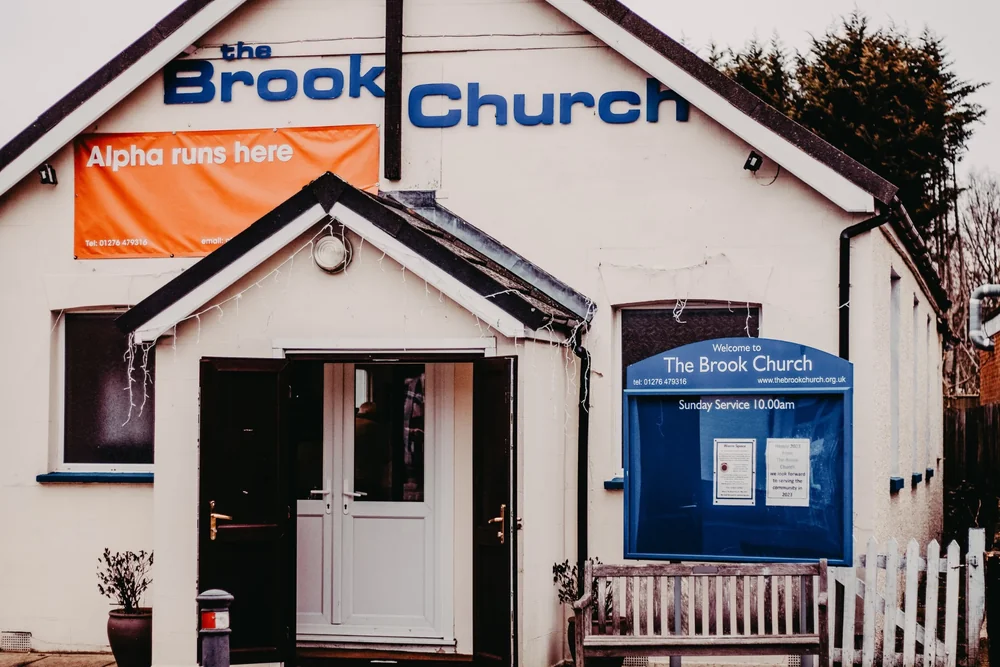

Our story
A new chapter for the church in Bagshot
We believe God is calling us into a new season. Tom and Rachel Keast are helping lead this new chapter, with the support of Ascot Life Church and the Commission family of churches.
Our vision is to see Bagshot transformed through the Gospel.
In Bagshot since 1925
-
Church begins
Bagshot Gospel Mission opens just off The Square, on the site the church still occupies. Generations of Bagshot families remember its Sunday school, choir and outings.
-
Around 1975
A new name
About fifty years after it began, the Gospel Mission takes the name Bagshot Evangelical Church.
-
Later years
Becoming The Brook
The church later takes the name The Brook Church and continues to meet in The Square.

-
Joining Commission
The Brook joins Commission, a family of churches working together to share the good news of Jesus.
-
Working with Ascot Life
The Brook invites Ascot Life Church to help oversee and support the church as it considers its future in Bagshot.
-
Autumn 2025
A century in Bagshot
The Brook marks its centenary. Members vote to join Ascot Life Church and begin preparing together for a fresh start in Bagshot.
-
Preparing to relaunch
With support from Ascot Life Church and Commission, a team gathers to pray, plan Sunday gatherings and prepare the building in The Square.
-
New Life Church
New Life Church launches and begins weekly Sunday services.